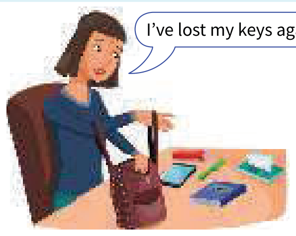

Learning Objectives
- Use the present continuous for things happening at or around the time of speaking
- Use the present simple for things in general or things that happen repeatedly
- Keep the continuous for an action that is not complete
- Choose the continuous for temporary situations and the simple for permanent ones
- See the difference between I always do and I'm always doing
- Use I'm always doing to say that something happens too often or more often than normal
Part A — Theory
Compare: present continuous (I am doing) and present simple (I do)
| Present continuous (I am doing) | Present simple (I do) |
|---|---|
| We use the continuous for things happening at or around the time of speaking. The action is not complete. | We use the simple for things in general or things that happen repeatedly. |
past → now → future: I am doing |
past → now → future: I do |
| The water is boiling. Be careful. | Water boils at 100 degrees Celsius. |
| Listen to those people. What language are they speaking? | Excuse me, do you speak English? |
| Let's go out. It isn't raining now. | It doesn't rain very much in summer. |
| 'I'm busy.' 'What are you doing?' | What do you usually do at weekends? |
| I'm getting hungry. Let's go and eat. | I always get hungry in the afternoon. |
| Kate wants to work in Italy, so she's learning Italian. | Most people learn to swim when they are children. |
| The population of the world is increasing very fast. | Every day the population of the world increases by about 200,000 people. |
| See Unit 1 for more information. | See Unit 2 for more information. |
Temporary and permanent situations
| Temporary situations — the continuous | Permanent situations — the simple |
|---|---|
| We use the continuous for temporary situations (things that continue for a short time): | We use the simple for permanent situations (things that continue for a long time): |
| I'm living with some friends until I find a place of my own. | My parents live in London. They have lived there all their lives. |
| a: You're working hard today. b: Yes, I have a lot to do. | Joe isn't lazy. He works hard most of the time. |
| See Unit 1 for more information. | See Unit 2 for more information. |
I always do and I'm always doing
I always do something = I do it every time:
I always go to work by car. (not I'm always going)

I've lost my keys again. I'm always losing them.
I'm always losing them = I lose them too often, or more often than normal.
Paul is never satisfied. He's always complaining. (= he complains too much)
You're always looking at your phone. Don't you have anything else to do?
Present continuous and simple 2 ➜ Unit 4
Present tenses for the future ➜ Unit 19
Part B — Exercises
Are the underlined verbs OK? Correct them where necessary.
Correct the underlined verb, or write OK in the box if it is already right. Both contractions and full forms are accepted.
- Water boils at 100 degrees Celsius.
- How often are you going to the cinema?
- Ben tries to find a job, but he hasn't had any luck yet.
- Martina is phoning her mother every day.
- The moon goes round the earth in about 27 days.
- Can you hear those people? What do they talk about?
- What do you do in your spare time?
- Sarah is a vegetarian. She doesn't eat meat.
- I must go now. It gets late.
- 'Come on! It's time to leave.' 'OK, I come.'
- Paul is never late. He's always starting work on time.
- They don't get on well. They're always arguing.
Put the verb into the correct form, present continuous or present simple.
Contractions like I'm and full forms like I am are both accepted.
- a (I / usually / get) hungry in the afternoon.
b (I / get) hungry. Let's go and eat something. - a ' to the radio?' 'No, you can turn it off.'
b ' to the radio a lot?' 'No, not very often.' - a The River Nile into the Mediterranean.
b The river very fast today – much faster than usual. - a I'm not very active. any sport.
b What at weekends? - a Rachel is in New York right now. at the Park Hotel.
b there when she's in New York.
Put the verb into the correct form, present continuous or present simple.
Contractions like I'm and full forms like I am are both accepted.
- Why are all these people here? (What / happen)?
- Julia is good at languages. four languages very well.
- Are you ready yet? for you.
- I've never heard this word. How it?
- Kate this week. She's on holiday.
- I think my English slowly. It's better than it was.
- Nicola in Manchester. She has never lived anywhere else.
- Can we stop walking soon? to get tired.
- Sam and Tina are in Madrid right now. a friend of theirs.
- 'What ?' 'He's an architect.'
- It took me an hour to get to work this morning. Most days so long.
- I to drive. My driving test is next month. My father me.
Finish B's sentences. Use always -ing.
Contractions like It's and full forms like It is are both accepted.
- a I've lost my keys again.
b Not again! . - a The car has broken down again.
b That car is useless. It . - a Look! You've made the same mistake again.
b Oh no, not again! I . - a Oh, I've left my phone at home again.
b Typical! .
Answer Key
Exercise 3.1 — Are the underlined verbs OK?
- Water boils at 100 degrees Celsius. OK
- How often do you go to the cinema?
- Ben is trying to find a job, but he hasn't had any luck yet.
- Martina phones her mother every day.
- The moon goes round the earth in about 27 days. OK
- Can you hear those people? What are they talking about?
- What do you do in your spare time? OK
- Sarah is a vegetarian. She doesn't eat meat. OK
- I must go now. It's getting / It is getting late.
- 'Come on! It's time to leave.' 'OK, I'm coming / I am coming.'
- Paul is never late. He always starts work on time.
- They don't get on well. They're always arguing. OK
Exercise 3.2 — Continuous or simple
- a I usually get hungry in the afternoon.
b I'm getting / I am getting hungry. Let's go and eat something. - a 'Are you listening to the radio?' 'No, you can turn it off.'
b 'Do you listen to the radio a lot?' 'No, not very often.' - a The River Nile flows into the Mediterranean.
b The river is flowing / 's flowing very fast today – much faster than usual. - a I'm not very active. I don't do / I do not do any sport.
b What do you usually do at weekends? - a Rachel is in New York right now. She's staying / She is staying at the Park Hotel.
b She always stays there when she's in New York.
Exercise 3.3 — Continuous or simple
- Why are all these people here? What's happening / What is happening?
- Julia is good at languages. She speaks four languages very well.
- Are you ready yet? Everybody's waiting / Everybody is waiting for you.
- I've never heard this word. How do you pronounce it?
- Kate isn't working / is not working / 's not working this week. She's on holiday.
- I think my English is improving slowly. It's better than it was.
- Nicola lives in Manchester. She has never lived anywhere else.
- Can we stop walking soon? I'm starting / I am starting to get tired.
- Sam and Tina are in Madrid right now. They're visiting / They are visiting a friend of theirs.
- 'What does your father do?' 'He's an architect.'
- It took me an hour to get to work this morning. Most days it doesn't take / it does not take so long.
- I I'm learning / I am learning to drive. My driving test is next month. My father is teaching / 's teaching me.
Exercise 3.4 — You're always doing it
- Not again! You're always losing your keys.
- That car is useless. It's always breaking down.
- Oh no, not again! I'm always making the same mistake / I'm always making that mistake.
- Typical! You're always leaving your phone at home.
Summary
| Use | Example |
|---|---|
| Things happening at or around the time of speaking | The water is boiling. Be careful. |
| Things in general or that happen repeatedly | Water boils at 100 degrees Celsius. |
| Temporary situations | I'm living with some friends until I find a place of my own. |
| Permanent situations | My parents live in London. |
| Something I do every time | I always go to work by car. |
| Something I do too often or more often than normal | I'm always losing my keys. |